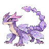
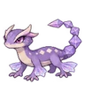

No.116
リユタイ
潮 進化形
珊瑚に似た枝角で澄んだ水を集める。小さな魚の群れがいつも傍らを泳ぐ。
基本データ
| 図鑑番号 | No.116 |
|---|---|
| タイプ | 潮タイプ |
| 進化 | リユナからLv.24で進化 |
| 入手方法 | 白潮の交易街（Lv.41〜44）、海藻林の底（Lv.58〜61）、天頂の門前町（Lv.91〜94）、星の大階段（Lv.91〜94）の草むらに出現。 |
Lv.50の能力値
| HP | 287 | |
|---|---|---|
| 攻撃 | 169 | |
| 防御 | 120 | |
| 特攻 | 170 | |
| 特防 | 122 | |
| 素早さ | 116 | |
| 命中 | 96 | |
| 回避 | 96 |
冒険中の能力値はレベルに応じて上がります。オンライン対戦の通常レンタルはLv.50で統一されます。
覚える技
| 技 | タイプ | 分類 | 威力 | 命中 | PP | 効果 |
|---|---|---|---|---|---|---|
| 潮汐の抱擁 | 潮 | 物理 | 36 | 91 | 15 | 与えたダメージの25%を分けてもらう。 |
| 雫の鍵盤 | 潮 | 特殊 | 21 | 100 | 30 | 水滴を弾いて小さな音の粒を飛ばす。 |
| 高空の弦 | 風 | 物理 | 38 | 94 | 15 | 高い空に張った見えない弦を鳴らす。 |
| 泡沫の天蓋 | 潮 | 防御 | — | — | 15 | 泡の天蓋で、次の攻撃のダメージを半分にする。 |
進化の系譜

リユナLv.24 ▶- リユタイ
タイプ相性
潮タイプの技は灯タイプに強く（1.5倍）、芽タイプの技を受けると効果が大きくなります。同じタイプの技を使うと威力が1.15倍になります。